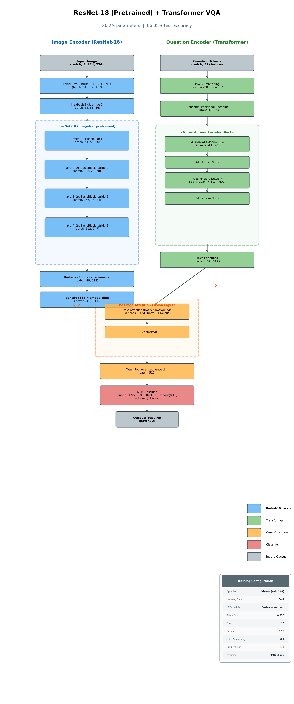
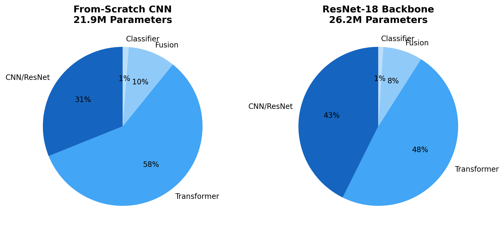
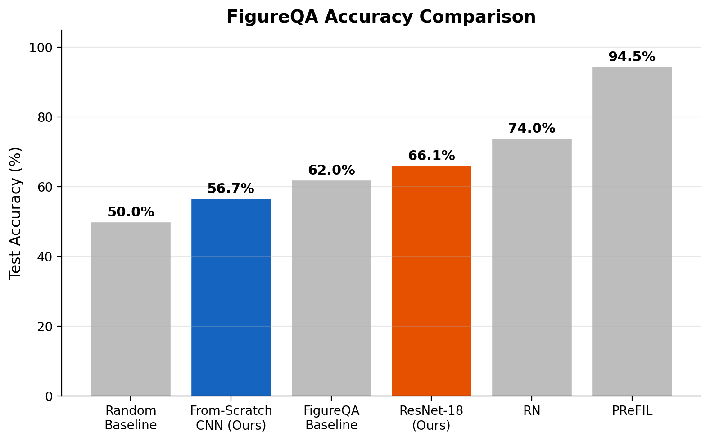

Multi-Scale CNN + Transformer + Cross-Attention Fusion
Winter 2026
Teaching machines to understand charts and answer yes/no questions about colors, values, and relationships. I present a two-stream architecture combining a Multi-Scale CNN (or pretrained ResNet-18) with a from-scratch Transformer encoder, fused via stacked cross-attention, achieving 66.08% accuracy on the FigureQA dataset — surpassing the original paper's baseline.
Given a chart image and a natural language question, predict Yes or No. The model must jointly understand visual content and language to reason about data encoded in charts.
The core challenge: Fine-grained color discrimination — is "Dark Seafoam" greater than "Medium Seafoam"? The model must distinguish between visually similar colors and map them to question tokens.
↓ scroll to scrub
| Chart Images | 100,000 |
| QA Pairs | 1,327,368 |
| Chart Types | 5 (bar, line, pie, dot-line, area) |
| Class Balance | 50/50 Yes/No |
| Image Splits | 80K / 10K / 10K (train / val / test) |
| Vocabulary | 128 unique words (templated questions) |
FigureQA uses 15 templated question types across two categories, requiring diverse visual reasoning beyond simple comparisons:
Why split by image? Each chart generates ~13 QA pairs. Random splitting would leak visual features across train/val/test sets, inflating accuracy. I split by image to ensure the model never sees the same chart during evaluation.
A two-stream architecture that processes images and text in parallel, then fuses them through cross-attention for joint reasoning.
↓ scroll to scrub
21.9M parameters (from-scratch CNN) / 26.2M parameters (with ResNet-18)
A four-layer convolutional network that extracts features at multiple spatial scales, inspired by PReFIL's multi-scale approach.
↓ scroll to scrub
Mid-level features (Conv3) capture color information crucial for chart questions, while high-level features (Conv4) encode spatial relationships between chart elements. Both are pooled to a 7×7 grid, projected to 512 dimensions, and combined via element-wise addition with layer normalization.
A standard Transformer encoder built entirely from scratch — every attention head, projection, and layer norm hand-implemented.
Key design choices for the text encoder:
Cross-attention allows text tokens to query image features — each word learns which spatial regions of the chart are relevant to it.
↓ scroll to scrub
Worked example: "Is navy blue greater than crimson?" — Layer 1 locates both colors in the 7×7 spatial grid. Layer 2 compares their values. The fused representation is mean-pooled over the sequence to produce a single 512-dim vector, then classified via MLP(512→512→2) to predict Yes or No.
Two configurations: one with a from-scratch CNN and one with a pretrained ResNet-18 backbone. Same Transformer, same cross-attention, same MLP.
| From-Scratch CNN | ResNet-18 | |
|---|---|---|
| Image Encoder | Custom 4-layer CNN | Pretrained ResNet-18 |
| Parameters | 21.9M | 26.2M |
| Optimizer | AdamW (wd=0.01) | AdamW (wd=0.01) |
| Learning Rate | 3e-4 | 5e-4 |
| LR Schedule | Cosine + 1-epoch warmup | Cosine + 1-epoch warmup |
| Batch Size | 1024 (FP32) | 4096 (FP16) |
| GPU | A100 40GB | A100 80GB |
| Precision | FP32 | FP16 Mixed |
| Epochs | 10 | 10 |
| Gradient Clip | 1.0 | 1.0 |
| Label Smoothing | 0.1 | 0.1 |
| Dropout | 0.15 | 0.15 |
Four complementary strategies to prevent overfitting on 1.06M training examples:
Label Smoothing (0.1) — Softens hard targets [1, 0] → [0.9, 0.1], preventing overconfident predictions and improving generalization.
Dropout (0.15) — Applied in self-attention, feed-forward network, and MLP classifier. Low enough to learn, high enough to regularize.
Weight Decay (0.01) — AdamW decoupled L2 regularization. Penalizes large weights without interfering with adaptive learning rates.
Transfer Learning (ResNet only) — ImageNet pretraining as implicit regularization. Pretrained features constrain the image encoder to a good region of weight space.
↓ scroll to scrub
The from-scratch CNN achieved 56.72% test accuracy, with balanced per-class performance: 53.67% on Yes questions and 59.76% on No questions. The model plateaued around epochs 7–8, indicating no class bias but a fundamental ceiling.
The from-scratch CNN learns general spatial features but struggles with fine-grained color discrimination — the core challenge of chart VQA. With only 80K training images, four convolutional layers cannot learn the rich color representations needed to distinguish between "Dark Seafoam" and "Medium Seafoam."
Why pretrained features transform chart VQA performance:


The ResNet-18 variant achieved 66.08% test accuracy — a +9.4 percentage point improvement over the from-scratch CNN. The model was still improving at epoch 10 with no plateau, suggesting more epochs could push accuracy toward 70%+.
| Model | Accuracy |
|---|---|
| Random baseline | 50.0% |
| Ours (from-scratch CNN) | 56.7% |
| FigureQA paper baseline | ~62% |
| Ours (ResNet-18) | 66.1% |
| Published SOTA (RN) | 72–76% |
| Published SOTA (PReFIL) | 93–96% |

Warmup phase (epoch 1). Learning rate ramps linearly from 0 to peak. The model reaches ~55% accuracy during warmup — necessary for training stability with large batch sizes and the Transformer's sensitivity to initial learning rates.
CNN plateau (epochs 7–8). The from-scratch CNN hits a 56.5% ceiling. This is a fundamental limitation: four convolutional layers trained on 80K images cannot learn the fine-grained color representations that chart VQA requires.
ResNet keeps learning. At 66.1% after 10 epochs with no plateau. The pretrained backbone enables continued improvement — more epochs could push accuracy toward 70%+.
+15.4pp improvement on Yes questions (53.7% → 69.1%), +3.3pp on No questions (59.8% → 63.1%). Transfer learning disproportionately helps affirmative reasoning — recognizing that a color is present requires finer visual discrimination than recognizing it is not.
Why 512 embedding dimension? Matches ResNet-18's feature map width after adaptive pooling. Divides cleanly into 8 attention heads × 64 dimensions each — the standard configuration from "Attention Is All You Need."
Why 2 cross-attention layers? Layer 1 locates relevant image regions for each question token. Layer 2 performs multi-step reasoning — comparing values between located regions. One layer can find colors; two layers can compare them.
Why multi-scale CNN? Mid-level features (Conv3) capture color and edge information crucial for identifying chart elements. High-level features (Conv4) encode spatial layout and relationships between bars, lines, and segments.
Why split data by image? Each chart generates ~13 QA pairs. Random splitting would place questions about the same chart in both train and test sets, leaking visual features and inflating accuracy by up to 10%.
Why mean-pool the fused features? Simple aggregation over the sequence dimension. Fewer parameters than attention pooling or [CLS] token approaches, and empirically competitive for binary classification tasks.
Why sinusoidal positional encoding? Deterministic, requires no extra trainable parameters. With only 128 vocabulary words and 32 max sequence length, learned encodings offer no advantage over the analytical sinusoidal formula.
Transfer learning works. +9.4 percentage points from ImageNet pretraining. Pretrained color and texture features transfer directly to chart understanding, beating the FigureQA paper baseline.
Cross-attention fuses modalities. Two-layer cross-attention successfully bridges vision and language. Text tokens learn to attend to spatially relevant image regions for multi-step reasoning.
Color is the bottleneck. Fine-grained color discrimination remains the core challenge. The gap between 66% and SOTA 93%+ is primarily about distinguishing visually similar chart colors.